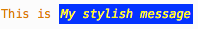
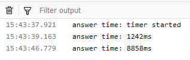

console
The console object provides access to the browser's
debugging console (e.g. the Web console in Firefox).
The specifics of how it works varies from browser to browser, but there is a de facto
set of features that are typically provided.
The console object can be accessed from any global object. Window on
browsing scopes and WorkerGlobalScope as specific variants in workers via the
property console. It's exposed as Window.console, and can be referenced as
console. For example:
console.log("Failed to open the specified link");
This page documents the Methods available on the console object and
gives a few Usage examples.
Note: This feature is available in Web Workers
Instance methods
console.assert()-
Log a message and stack trace to console if the first argument is
false. console.clear()-
Clear the console.
console.count()-
Log the number of times this line has been called with the given label.
console.countReset()-
Resets the value of the counter with the given label.
console.debug()-
Outputs a message to the console with the log level
debug. console.dir()-
Displays an interactive listing of the properties of a specified JavaScript object. This listing lets you use disclosure triangles to examine the contents of child objects.
console.dirxml()-
Displays an XML/HTML Element representation of the specified object if possible or the JavaScript Object view if it is not possible.
console.error()-
Outputs an error message. You may use string substitution and additional arguments with this method.
console.exception()Non-standard Deprecated-
An alias for
error(). console.group()-
Creates a new inline group, indenting all following output by another level. To move back out a level, call
groupEnd(). console.groupCollapsed()-
Creates a new inline group, indenting all following output by another level. However, unlike
group()this starts with the inline group collapsed requiring the use of a disclosure button to expand it. To move back out a level, callgroupEnd(). console.groupEnd()-
Exits the current inline group.
console.info()-
Informative logging of information. You may use string substitution and additional arguments with this method.
console.log()-
For general output of logging information. You may use string substitution and additional arguments with this method.
console.profile()Non-standard-
Starts the browser's built-in profiler (for example, the Firefox performance tool). You can specify an optional name for the profile.
console.profileEnd()Non-standard-
Stops the profiler. You can see the resulting profile in the browser's performance tool (for example, the Firefox performance tool).
console.table()-
Displays tabular data as a table.
console.time()-
Starts a timer with a name specified as an input parameter. Up to 10,000 simultaneous timers can run on a given page.
console.timeEnd()-
Stops the specified timer and logs the elapsed time in milliseconds since it started.
console.timeLog()-
Logs the value of the specified timer to the console.
console.timeStamp()Non-standard-
Adds a marker to the browser performance tool's timeline (Chrome or Firefox).
console.trace()-
Outputs a stack trace.
console.warn()-
Outputs a warning message. You may use string substitution and additional arguments with this method.
Examples
Outputting text to the console
The most frequently-used feature of the console is logging of text and other data. There are several categories of output you can generate, using the console.log(), console.info(), console.warn(), console.error(), or console.debug() methods. Each of these results in output styled differently in the log, and you can use the filtering controls provided by your browser to only view the kinds of output that interest you.
There are two ways to use each of the output methods; you can pass in a list of objects whose string representations get concatenated into one string, then output to the console, or you can pass in a string containing zero or more substitution strings followed by a list of objects to replace them.
Outputting a single object
The simplest way to use the logging methods is to output a single object:
const someObject = { str: "Some text", id: 5 };
console.log(someObject);
The output looks something like this:
{str:"Some text", id:5}
Outputting multiple objects
You can also output multiple objects by listing them when calling the logging method, like this:
const car = "Dodge Charger";
const someObject = { str: "Some text", id: 5 };
console.info("My first car was a", car, ". The object is:", someObject);
The output will look like this:
My first car was a Dodge Charger. The object is: {str:"Some text", id:5}
Using string substitutions
When passing a string to one of the console object's methods that accepts a string (such as log()), you may use these substitution strings:
%oor%O-
Outputs a JavaScript object. Clicking the object name opens more information about it in the inspector.
%dor%i-
Outputs an integer. Number formatting is supported, for example
console.log("Foo %.2d", 1.1)will output the number as two significant figures with a leading 0:Foo 01. %s-
Outputs a string.
%f-
Outputs a floating-point value. Formatting is supported, for example
console.log("Foo %.2f", 1.1)will output the number to 2 decimal places:Foo 1.10.
Note: Precision formatting doesn't work in Chrome.
Each of these pulls the next argument after the format string off the parameter list. For example:
for (let i = 0; i < 5; i++) {
console.log("Hello, %s. You've called me %d times.", "Bob", i + 1);
}
The output looks like this:
Hello, Bob. You've called me 1 times. Hello, Bob. You've called me 2 times. Hello, Bob. You've called me 3 times. Hello, Bob. You've called me 4 times. Hello, Bob. You've called me 5 times.
Styling console output
You can use the %c directive to apply a CSS style to console output:
console.log(
"This is %cMy stylish message",
"color: yellow; font-style: italic; background-color: blue;padding: 2px"
);
The text before the directive will not be affected, but the text after the directive will be styled using the CSS declarations in the parameter.

You may use %c multiple times:
console.log(
"Multiple styles: %cred %corange",
"color: red",
"color: orange",
"Additional unformatted message"
);
The properties usable along with the %c syntax are as follows (at least, in Firefox — they may differ in other browsers):
backgroundand its longhand equivalentsborderand its longhand equivalentsborder-radiusbox-decoration-breakbox-shadowclearandfloatcolorcursordisplayfontand its longhand equivalentsline-heightmarginoutlineand its longhand equivalentspaddingtext-*properties such astext-transformwhite-spaceword-spacingandword-breakwriting-mode
Note: The console message behaves like an inline element by default. To see the effects of padding, margin, etc. you should set it to for example display: inline-block.
Using groups in the console
You can use nested groups to help organize your output by visually combining related material. To create a new nested block, call console.group(). The console.groupCollapsed() method is similar but creates the new block collapsed, requiring the use of a disclosure button to open it for reading.
To exit the current group, call console.groupEnd(). For example, given this code:
console.log("This is the outer level");
console.group("First group");
console.log("In the first group");
console.group("Second group");
console.log("In the second group");
console.warn("Still in the second group");
console.groupEnd();
console.log("Back to the first group");
console.groupEnd();
console.debug("Back to the outer level");
The output looks like this:

Timers
You can start a timer to calculate the duration of a specific operation. To start one, call the console.time() method, giving it a name as the only parameter. To stop the timer, and to get the elapsed time in milliseconds, just call the console.timeEnd() method, again passing the timer's name as the parameter. Up to 10,000 timers can run simultaneously on a given page.
For example, given this code:
console.time("answer time");
alert("Click to continue");
console.timeLog("answer time");
alert("Do a bunch of other stuff…");
console.timeEnd("answer time");
Will log the time needed by the user to dismiss the alert box, log the time to the console, wait for the user to dismiss the second alert, and then log the ending time to the console:

Notice that the timer's name is displayed both when the timer is started and when it's stopped.
Note: It's important to note that if you're using this to log the timing for network traffic, the timer will report the total time for the transaction, while the time listed in the network panel is just the amount of time required for the header. If you have response body logging enabled, the time listed for the response header and body combined should match what you see in the console output.
Stack traces
The console object also supports outputting a stack trace; this will show you the call path taken to reach the point at which you call console.trace(). Given code like this:
function foo() {
function bar() {
console.trace();
}
bar();
}
foo();
The output in the console looks something like this:

Specifications
| Specification |
|---|
| Console Standard # console-namespace |
Browser compatibility
| desktop | mobile | server | |||||||||||
|---|---|---|---|---|---|---|---|---|---|---|---|---|---|
console | |||||||||||||
assert | |||||||||||||
clear | |||||||||||||
count | |||||||||||||
countReset | |||||||||||||
debug | |||||||||||||
Substitution strings | |||||||||||||
dir | |||||||||||||
dirxml | |||||||||||||
error | |||||||||||||
Substitution strings | |||||||||||||
exception (an alias for error) | |||||||||||||
Substitution strings | |||||||||||||
group | |||||||||||||
groupCollapsed | |||||||||||||
groupEnd | |||||||||||||
info | |||||||||||||
Substitution strings | |||||||||||||
log | |||||||||||||
Substitution strings | |||||||||||||
profile | |||||||||||||
profileEnd | |||||||||||||
table | |||||||||||||
time | |||||||||||||
timeEnd | |||||||||||||
timeLog | |||||||||||||
timeStamp | |||||||||||||
trace | |||||||||||||
warn | |||||||||||||
Substitution strings | |||||||||||||
Available in workers | |||||||||||||
Notes
- At least in Firefox, if a page defines a
consoleobject, that object overrides the one built into Firefox.
See also
- Firefox Developer Tools
- Web console — how the Web console in Firefox handles console API calls
- about:debugging — how to see console output when the debugging target is a mobile device